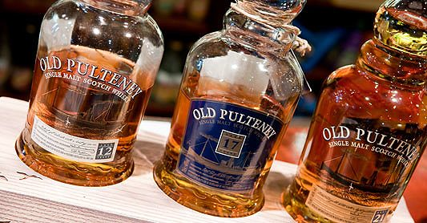
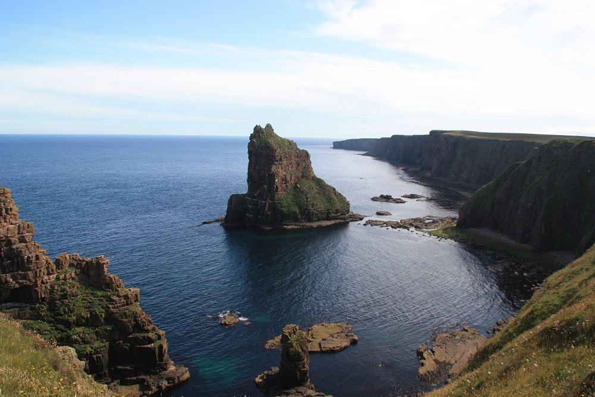

c.1826
Built in the herring boom
The house went up while the harbour was being extended and Wick was growing into the busiest herring port in the world. Original cornicing survives, and the flagstone cellars, once the servants' quarters, still hold a cast-iron cooking range.

A dram with a connection
The ground was bought in 1823 by John Kirk, later Provost of Wick, who became a partner in founding the Pulteney Distillery in 1827. Drink an Old Pulteney in the garden of the house its founder built.

Cliffs, stacks and light nights
The Stacks of Duncansby, the Castle of Mey and the wild Caithness coast are a short drive away. In summer the days stretch and darkness is reluctant to fall.